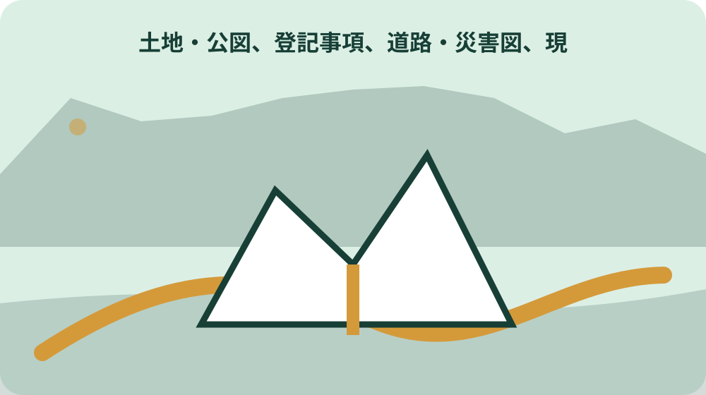
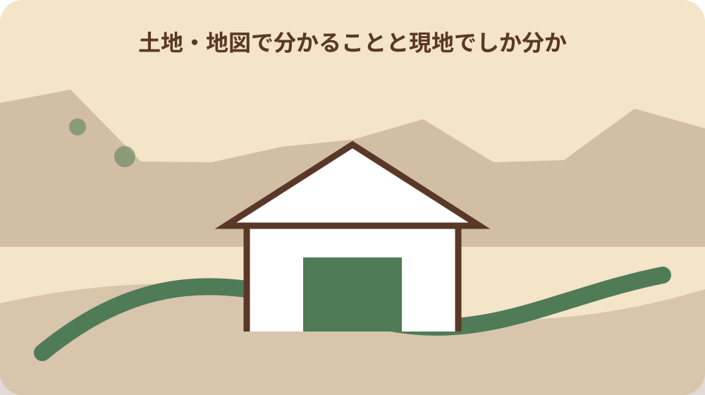

森町の土地で下水道台帳と現地の公共ますを照合するで最初に決める確認範囲
焦点「土地で下水道台帳と現地の公共ますを照合する」の論点「森町の土地で下水道台帳と現地の公共ますを照合するで最初に決める確認範囲」として、森町の土地で下水道台帳と現地の公共ますを照合するについて家族や担当窓口へ尋ねるときは、「森町の土地で下水道台帳と現地の公共ますを照合するで最初に決める確認範囲」「「誰が、どの時点で「土地で下水道台帳と現地の公共ますを照合する」を確認する記事か」は「森町の土地で下水道台帳と現地の公共ますを照合する」の判断を分ける確認項目である。森町公式の担当情報を根拠に、対象地番・対象者・資料基準日を一致させて確認する。」「未確認の個別条件」の三点を一組で伝えます。返答は可否だけでなく、根拠資料名、担当部署、再確認が必要な時点まで残します。
焦点「土地で下水道台帳と現地の公共ますを照合する」の論点「森町の土地で下水道台帳と現地の公共ますを照合するで最初に決める確認範囲」として、実行前の記録には、第1の論点「森町の土地で下水道台帳と現地の公共ますを照合するで最初に決める確認範囲」、確認日、対象年度、担当者へ伝えた前提を書きます。旧案のMERGE理由を解消するため別検索意図へ差し替え。『区域制度の説明ではなく、台帳上の情報と現地設備が一致するか確認したい』だけに答え、旧統合先や確認不能な地域慣行の説明を広げない。。このページで断定できない事項は推測で補わず、確認待ちとして次の担当と期限を決めます。
土地で下水道台帳と現地の公共ますを照合する・第1論点の断定防止：境界、道路種別、建築可否、開発可否、災害安全性を地図だけで確定しない。図面の作成日と縮尺を示し、現地・公図・担当課・専門資格者の確認を重ねる。。「「誰が、どの時点で「土地で下水道台帳と現地の公共ますを照合する」を確認する記事か」は「森町の土地で下水道台帳と現地の公共ますを照合する」の判断を分ける確認項目である。森町公式の担当情報を根拠に、対象地番・対象者・資料基準日を一致させて確認する。」を確認できない場合は結論を保留し、一次情報の所管窓口または必要な専門家へ確認します。
区域制度の説明ではなく、台帳上の情報と現地設備が一致するか確認したい人が集める資料
焦点「土地で下水道台帳と現地の公共ますを照合する」の論点「区域制度の説明ではなく、台帳上の情報と現地設備が一致するか確認したい人が集める資料」として、実行前の記録には、第2の論点「区域制度の説明ではなく、台帳上の情報と現地設備が一致するか確認したい人が集める資料」、確認日、対象年度、担当者へ伝えた前提を書きます。旧案のMERGE理由を解消するため別検索意図へ差し替え。『区域制度の説明ではなく、台帳上の情報と現地設備が一致するか確認したい』だけに答え、旧統合先や確認不能な地域慣行の説明を広げない。。このページで断定できない事項は推測で補わず、確認待ちとして次の担当と期限を決めます。
焦点「土地で下水道台帳と現地の公共ますを照合する」の論点「区域制度の説明ではなく、台帳上の情報と現地設備が一致するか確認したい人が集める資料」として、この論点を後回しにすると、必要資料、移動、家族の役割、費用のいずれかで手戻りが起こります。まず「森町公式ページの更新日、対象、申請・相談期限、担当窓口を行動日の直前に再確認し、電話確認時は回答日と担当課を残す。」を確かめ、次に「「公式資料で確定できる範囲と、資料だけでは確定できない範囲」は「森町の土地で下水道台帳と現地の公共ますを照合する」の判断を分ける確認項目である。森町公式の担当情報を根拠に、対象地番・対象者・資料基準日を一致させて確認する。」が自分のケースへ適用されるかを所管情報と窓口で照合してください。
土地で下水道台帳と現地の公共ますを照合する・第2論点の断定防止：境界、道路種別、建築可否、開発可否、災害安全性を地図だけで確定しない。図面の作成日と縮尺を示し、現地・公図・担当課・専門資格者の確認を重ねる。。「「公式資料で確定できる範囲と、資料だけでは確定できない範囲」は「森町の土地で下水道台帳と現地の公共ますを照合する」の判断を分ける確認項目である。森町公式の担当情報を根拠に、対象地番・対象者・資料基準日を一致させて確認する。」を確認できない場合は結論を保留し、一次情報の所管窓口または必要な専門家へ確認します。
誰が、どの時点で「土地で下水道台帳と現地の公共ますを照合する」を確認する記事か
焦点「土地で下水道台帳と現地の公共ますを照合する」の論点「誰が、どの時点で「土地で下水道台帳と現地の公共ますを照合する」を確認する記事か」として、この論点を後回しにすると、必要資料、移動、家族の役割、費用のいずれかで手戻りが起こります。まず「区域制度の説明ではなく、台帳上の情報と現地設備が一致するか確認したい場合は、現地写真、登記事項、境界・道路・農地の資料を同じ地番表にまとめ、家族間で未確認欄を共有する。」を確かめ、次に「「公図、登記事項、道路・災害図、現地写真を重ねる」は「森町の土地で下水道台帳と現地の公共ますを照合する」の判断を分ける確認項目である。町の関連制度と現地資料を根拠に、対象地番・対象者・資料基準日を一致させて確認する。」が自分のケースへ適用されるかを所管情報と窓口で照合してください。
焦点「土地で下水道台帳と現地の公共ますを照合する」の論点「誰が、どの時点で「土地で下水道台帳と現地の公共ますを照合する」を確認する記事か」として、「誰が、どの時点で「土地で下水道台帳と現地の公共ますを照合する」を確認する記事か」で根拠にする確認事項は、「公図、登記事項、道路・災害図、現地写真を重ねる」は「森町の土地で下水道台帳と現地の公共ますを照合する」の判断を分ける確認項目である。町の関連制度と現地資料を根拠に、対象地番・対象者・資料基準日を一致させて確認する。です。この記載が今回の対象と一致するか、対象者、対象日、場所、例外を資料本文で照合します。確認元は https://www.reinfolib.mlit.go.jp/ として記録し、検索結果の要約だけで判断しません。
土地で下水道台帳と現地の公共ますを照合する・第3論点の断定防止：境界、道路種別、建築可否、開発可否、災害安全性を地図だけで確定しない。図面の作成日と縮尺を示し、現地・公図・担当課・専門資格者の確認を重ねる。。「「公図、登記事項、道路・災害図、現地写真を重ねる」は「森町の土地で下水道台帳と現地の公共ますを照合する」の判断を分ける確認項目である。町の関連制度と現地資料を根拠に、対象地番・対象者・資料基準日を一致させて確認する。」を確認できない場合は結論を保留し、一次情報の所管窓口または必要な専門家へ確認します。
公式資料で確定できる範囲と、資料だけでは確定できない範囲
焦点「土地で下水道台帳と現地の公共ますを照合する」の論点「公式資料で確定できる範囲と、資料だけでは確定できない範囲」として、「公式資料で確定できる範囲と、資料だけでは確定できない範囲」で根拠にする確認事項は、「地図で分かることと現地でしか分からないことを分ける」は「森町の土地で下水道台帳と現地の公共ますを照合する」の判断を分ける確認項目である。町の関連制度と現地資料を根拠に、対象地番・対象者・資料基準日を一致させて確認する。です。この記載が今回の対象と一致するか、対象者、対象日、場所、例外を資料本文で照合します。確認元は https://www.town.morimachi.shizuoka.jp/gyosei/machinososhiki/kensetsuka/index.html として記録し、検索結果の要約だけで判断しません。
焦点「土地で下水道台帳と現地の公共ますを照合する」の論点「公式資料で確定できる範囲と、資料だけでは確定できない範囲」として、森町で特に分けて考える条件は「町の案内と国・県・所管機関の案内で扱う範囲を分け、個別の許可、税額、権利、法適合を記事だけで確定しない。」です。区域制度の説明ではなく、台帳上の情報と現地設備が一致するか確認したいという目的に照らし、住所、利用者、実行時期のどれが違えば結論が変わるかを確認表へ書きます。町全体の一般論を個別地点の答えへ置き換えません。
土地で下水道台帳と現地の公共ますを照合する・第4論点の断定防止：境界、道路種別、建築可否、開発可否、災害安全性を地図だけで確定しない。図面の作成日と縮尺を示し、現地・公図・担当課・専門資格者の確認を重ねる。。「「地図で分かることと現地でしか分からないことを分ける」は「森町の土地で下水道台帳と現地の公共ますを照合する」の判断を分ける確認項目である。町の関連制度と現地資料を根拠に、対象地番・対象者・資料基準日を一致させて確認する。」を確認できない場合は結論を保留し、一次情報の所管窓口または必要な専門家へ確認します。

公図、登記事項、道路・災害図、現地写真を重ねる
焦点「土地で下水道台帳と現地の公共ますを照合する」の論点「公図、登記事項、道路・災害図、現地写真を重ねる」として、森町で特に分けて考える条件は「森町の土地で下水道台帳と現地の公共ますを照合するは森町内でも地区・地番・接道・地目・設備状況により確認結果が変わるため、町名だけで可否を決めない。」です。区域制度の説明ではなく、台帳上の情報と現地設備が一致するか確認したいという目的に照らし、住所、利用者、実行時期のどれが違えば結論が変わるかを確認表へ書きます。町全体の一般論を個別地点の答えへ置き換えません。
焦点「土地で下水道台帳と現地の公共ますを照合する」の論点「公図、登記事項、道路・災害図、現地写真を重ねる」として、森町の土地で下水道台帳と現地の公共ますを照合するについて家族や担当窓口へ尋ねるときは、「公図、登記事項、道路・災害図、現地写真を重ねる」「「契約・設計・工事の各段階に照会停止点を置く」は「森町の土地で下水道台帳と現地の公共ますを照合する」の判断を分ける確認項目である。国・県・所管機関の情報を根拠に、対象地番・対象者・資料基準日を一致させて確認する。」「未確認の個別条件」の三点を一組で伝えます。返答は可否だけでなく、根拠資料名、担当部署、再確認が必要な時点まで残します。
土地で下水道台帳と現地の公共ますを照合する・第5論点の断定防止：境界、道路種別、建築可否、開発可否、災害安全性を地図だけで確定しない。図面の作成日と縮尺を示し、現地・公図・担当課・専門資格者の確認を重ねる。。「「契約・設計・工事の各段階に照会停止点を置く」は「森町の土地で下水道台帳と現地の公共ますを照合する」の判断を分ける確認項目である。国・県・所管機関の情報を根拠に、対象地番・対象者・資料基準日を一致させて確認する。」を確認できない場合は結論を保留し、一次情報の所管窓口または必要な専門家へ確認します。
地図で分かることと現地でしか分からないことを分ける
焦点「土地で下水道台帳と現地の公共ますを照合する」の論点「地図で分かることと現地でしか分からないことを分ける」として、森町の土地で下水道台帳と現地の公共ますを照合するについて家族や担当窓口へ尋ねるときは、「地図で分かることと現地でしか分からないことを分ける」「「森町内で地区・地番・物件条件が違う場合の「土地で下水道台帳と現地の公共ますを照合する」確認」は「森町の土地で下水道台帳と現地の公共ますを照合する」の判断を分ける確認項目である。町窓口への照会記録を根拠に、対象地番・対象者・資料基準日を一致させて確認する。」「未確認の個別条件」の三点を一組で伝えます。返答は可否だけでなく、根拠資料名、担当部署、再確認が必要な時点まで残します。
焦点「土地で下水道台帳と現地の公共ますを照合する」の論点「地図で分かることと現地でしか分からないことを分ける」として、実行前の記録には、第6の論点「地図で分かることと現地でしか分からないことを分ける」、確認日、対象年度、担当者へ伝えた前提を書きます。旧案のMERGE理由を解消するため別検索意図へ差し替え。『区域制度の説明ではなく、台帳上の情報と現地設備が一致するか確認したい』だけに答え、旧統合先や確認不能な地域慣行の説明を広げない。。このページで断定できない事項は推測で補わず、確認待ちとして次の担当と期限を決めます。
土地で下水道台帳と現地の公共ますを照合する・第6論点の断定防止：境界、道路種別、建築可否、開発可否、災害安全性を地図だけで確定しない。図面の作成日と縮尺を示し、現地・公図・担当課・専門資格者の確認を重ねる。。「「森町内で地区・地番・物件条件が違う場合の「土地で下水道台帳と現地の公共ますを照合する」確認」は「森町の土地で下水道台帳と現地の公共ますを照合する」の判断を分ける確認項目である。町窓口への照会記録を根拠に、対象地番・対象者・資料基準日を一致させて確認する。」を確認できない場合は結論を保留し、一次情報の所管窓口または必要な専門家へ確認します。
契約・設計・工事の各段階に照会停止点を置く
焦点「土地で下水道台帳と現地の公共ますを照合する」の論点「契約・設計・工事の各段階に照会停止点を置く」として、実行前の記録には、第7の論点「契約・設計・工事の各段階に照会停止点を置く」、確認日、対象年度、担当者へ伝えた前提を書きます。旧案のMERGE理由を解消するため別検索意図へ差し替え。『区域制度の説明ではなく、台帳上の情報と現地設備が一致するか確認したい』だけに答え、旧統合先や確認不能な地域慣行の説明を広げない。。このページで断定できない事項は推測で補わず、確認待ちとして次の担当と期限を決めます。
焦点「土地で下水道台帳と現地の公共ますを照合する」の論点「契約・設計・工事の各段階に照会停止点を置く」として、この論点を後回しにすると、必要資料、移動、家族の役割、費用のいずれかで手戻りが起こります。まず「区域制度の説明ではなく、台帳上の情報と現地設備が一致するか確認したい場合は、現地写真、登記事項、境界・道路・農地の資料を同じ地番表にまとめ、家族間で未確認欄を共有する。」を確かめ、次に「「誰が、どの時点で「土地で下水道台帳と現地の公共ますを照合する」を確認する記事か」は「森町の土地で下水道台帳と現地の公共ますを照合する」の判断を分ける確認項目である。森町公式の担当情報を根拠に、対象地番・対象者・資料基準日を一致させて確認する。」が自分のケースへ適用されるかを所管情報と窓口で照合してください。
土地で下水道台帳と現地の公共ますを照合する・第7論点の断定防止：境界、道路種別、建築可否、開発可否、災害安全性を地図だけで確定しない。図面の作成日と縮尺を示し、現地・公図・担当課・専門資格者の確認を重ねる。。「「誰が、どの時点で「土地で下水道台帳と現地の公共ますを照合する」を確認する記事か」は「森町の土地で下水道台帳と現地の公共ますを照合する」の判断を分ける確認項目である。森町公式の担当情報を根拠に、対象地番・対象者・資料基準日を一致させて確認する。」を確認できない場合は結論を保留し、一次情報の所管窓口または必要な専門家へ確認します。
森町内で地区・地番・物件条件が違う場合の「土地で下水道台帳と現地の公共ますを照合する」確認
焦点「土地で下水道台帳と現地の公共ますを照合する」の論点「森町内で地区・地番・物件条件が違う場合の「土地で下水道台帳と現地の公共ますを照合する」確認」として、この論点を後回しにすると、必要資料、移動、家族の役割、費用のいずれかで手戻りが起こります。まず「町の案内と国・県・所管機関の案内で扱う範囲を分け、個別の許可、税額、権利、法適合を記事だけで確定しない。」を確かめ、次に「「公式資料で確定できる範囲と、資料だけでは確定できない範囲」は「森町の土地で下水道台帳と現地の公共ますを照合する」の判断を分ける確認項目である。森町公式の担当情報を根拠に、対象地番・対象者・資料基準日を一致させて確認する。」が自分のケースへ適用されるかを所管情報と窓口で照合してください。
焦点「土地で下水道台帳と現地の公共ますを照合する」の論点「森町内で地区・地番・物件条件が違う場合の「土地で下水道台帳と現地の公共ますを照合する」確認」として、「森町内で地区・地番・物件条件が違う場合の「土地で下水道台帳と現地の公共ますを照合する」確認」で根拠にする確認事項は、「公式資料で確定できる範囲と、資料だけでは確定できない範囲」は「森町の土地で下水道台帳と現地の公共ますを照合する」の判断を分ける確認項目である。森町公式の担当情報を根拠に、対象地番・対象者・資料基準日を一致させて確認する。です。この記載が今回の対象と一致するか、対象者、対象日、場所、例外を資料本文で照合します。確認元は https://www.town.morimachi.shizuoka.jp/gyosei/bosai_anzen/bosai/hazardmap/1255.html として記録し、検索結果の要約だけで判断しません。
土地で下水道台帳と現地の公共ますを照合する・第8論点の断定防止：境界、道路種別、建築可否、開発可否、災害安全性を地図だけで確定しない。図面の作成日と縮尺を示し、現地・公図・担当課・専門資格者の確認を重ねる。。「「公式資料で確定できる範囲と、資料だけでは確定できない範囲」は「森町の土地で下水道台帳と現地の公共ますを照合する」の判断を分ける確認項目である。森町公式の担当情報を根拠に、対象地番・対象者・資料基準日を一致させて確認する。」を確認できない場合は結論を保留し、一次情報の所管窓口または必要な専門家へ確認します。
誤った断定を避ける質問文と窓口への持参資料
焦点「土地で下水道台帳と現地の公共ますを照合する」の論点「誤った断定を避ける質問文と窓口への持参資料」として、「誤った断定を避ける質問文と窓口への持参資料」で根拠にする確認事項は、「公図、登記事項、道路・災害図、現地写真を重ねる」は「森町の土地で下水道台帳と現地の公共ますを照合する」の判断を分ける確認項目である。町の関連制度と現地資料を根拠に、対象地番・対象者・資料基準日を一致させて確認する。です。この記載が今回の対象と一致するか、対象者、対象日、場所、例外を資料本文で照合します。確認元は https://www.reinfolib.mlit.go.jp/ として記録し、検索結果の要約だけで判断しません。
焦点「土地で下水道台帳と現地の公共ますを照合する」の論点「誤った断定を避ける質問文と窓口への持参資料」として、森町で特に分けて考える条件は「森町の土地で下水道台帳と現地の公共ますを照合するは森町内でも地区・地番・接道・地目・設備状況により確認結果が変わるため、町名だけで可否を決めない。」です。区域制度の説明ではなく、台帳上の情報と現地設備が一致するか確認したいという目的に照らし、住所、利用者、実行時期のどれが違えば結論が変わるかを確認表へ書きます。町全体の一般論を個別地点の答えへ置き換えません。
土地で下水道台帳と現地の公共ますを照合する・第9論点の断定防止：境界、道路種別、建築可否、開発可否、災害安全性を地図だけで確定しない。図面の作成日と縮尺を示し、現地・公図・担当課・専門資格者の確認を重ねる。。「「公図、登記事項、道路・災害図、現地写真を重ねる」は「森町の土地で下水道台帳と現地の公共ますを照合する」の判断を分ける確認項目である。町の関連制度と現地資料を根拠に、対象地番・対象者・資料基準日を一致させて確認する。」を確認できない場合は結論を保留し、一次情報の所管窓口または必要な専門家へ確認します。

大石の視点：売却や契約を急がず、道路・境界・登記・農地・家族共有へつなぐ
焦点「土地で下水道台帳と現地の公共ますを照合する」の論点「大石の視点：売却や契約を急がず、道路・境界・登記・農地・家族共有へつなぐ」として、森町で特に分けて考える条件は「森町公式ページの更新日、対象、申請・相談期限、担当窓口を行動日の直前に再確認し、電話確認時は回答日と担当課を残す。」です。区域制度の説明ではなく、台帳上の情報と現地設備が一致するか確認したいという目的に照らし、住所、利用者、実行時期のどれが違えば結論が変わるかを確認表へ書きます。町全体の一般論を個別地点の答えへ置き換えません。
焦点「土地で下水道台帳と現地の公共ますを照合する」の論点「大石の視点：売却や契約を急がず、道路・境界・登記・農地・家族共有へつなぐ」として、森町の土地で下水道台帳と現地の公共ますを照合するについて家族や担当窓口へ尋ねるときは、「大石の視点：売却や契約を急がず、道路・境界・登記・農地・家族共有へつなぐ」「「地図で分かることと現地でしか分からないことを分ける」は「森町の土地で下水道台帳と現地の公共ますを照合する」の判断を分ける確認項目である。町の関連制度と現地資料を根拠に、対象地番・対象者・資料基準日を一致させて確認する。」「未確認の個別条件」の三点を一組で伝えます。返答は可否だけでなく、根拠資料名、担当部署、再確認が必要な時点まで残します。
土地で下水道台帳と現地の公共ますを照合する・第10論点の断定防止：境界、道路種別、建築可否、開発可否、災害安全性を地図だけで確定しない。図面の作成日と縮尺を示し、現地・公図・担当課・専門資格者の確認を重ねる。。「「地図で分かることと現地でしか分からないことを分ける」は「森町の土地で下水道台帳と現地の公共ますを照合する」の判断を分ける確認項目である。町の関連制度と現地資料を根拠に、対象地番・対象者・資料基準日を一致させて確認する。」を確認できない場合は結論を保留し、一次情報の所管窓口または必要な専門家へ確認します。
このページの結論
焦点「土地で下水道台帳と現地の公共ますを照合する」のこのページの結論で私が重視する第1の判断材料は「「誰が、どの時点で「土地で下水道台帳と現地の公共ますを照合する」を確認する記事か」は「森町の土地で下水道台帳と現地の公共ますを照合する」の判断を分ける確認項目である。森町公式の担当情報を根拠に、対象地番・対象者・資料基準日を一致させて確認する。」と「森町の土地で下水道台帳と現地の公共ますを照合するは森町内でも地区・地番・接道・地目・設備状況により確認結果が変わるため、町名だけで可否を決めない。」の照合です。まだ実行を決めていなくても、確認日、対象、根拠、未確認事項を一枚に残せば、家族や担当者が同じ前提から話せます。確認できない事項は結論に混ぜず、次の確認先と期限を記録してください。
焦点「土地で下水道台帳と現地の公共ますを照合する」のこのページの結論で私が重視する第2の判断材料は「「公式資料で確定できる範囲と、資料だけでは確定できない範囲」は「森町の土地で下水道台帳と現地の公共ますを照合する」の判断を分ける確認項目である。森町公式の担当情報を根拠に、対象地番・対象者・資料基準日を一致させて確認する。」と「森町公式ページの更新日、対象、申請・相談期限、担当窓口を行動日の直前に再確認し、電話確認時は回答日と担当課を残す。」の照合です。まだ実行を決めていなくても、確認日、対象、根拠、未確認事項を一枚に残せば、家族や担当者が同じ前提から話せます。確認できない事項は結論に混ぜず、次の確認先と期限を記録してください。
焦点「土地で下水道台帳と現地の公共ますを照合する」のこのページの結論で私が重視する第3の判断材料は「「公図、登記事項、道路・災害図、現地写真を重ねる」は「森町の土地で下水道台帳と現地の公共ますを照合する」の判断を分ける確認項目である。町の関連制度と現地資料を根拠に、対象地番・対象者・資料基準日を一致させて確認する。」と「区域制度の説明ではなく、台帳上の情報と現地設備が一致するか確認したい場合は、現地写真、登記事項、境界・道路・農地の資料を同じ地番表にまとめ、家族間で未確認欄を共有する。」の照合です。まだ実行を決めていなくても、確認日、対象、根拠、未確認事項を一枚に残せば、家族や担当者が同じ前提から話せます。確認できない事項は結論に混ぜず、次の確認先と期限を記録してください。
焦点「土地で下水道台帳と現地の公共ますを照合する」のこのページの結論で私が重視する第4の判断材料は「「地図で分かることと現地でしか分からないことを分ける」は「森町の土地で下水道台帳と現地の公共ますを照合する」の判断を分ける確認項目である。町の関連制度と現地資料を根拠に、対象地番・対象者・資料基準日を一致させて確認する。」と「町の案内と国・県・所管機関の案内で扱う範囲を分け、個別の許可、税額、権利、法適合を記事だけで確定しない。」の照合です。まだ実行を決めていなくても、確認日、対象、根拠、未確認事項を一枚に残せば、家族や担当者が同じ前提から話せます。確認できない事項は結論に混ぜず、次の確認先と期限を記録してください。
大石の視点
焦点「土地で下水道台帳と現地の公共ますを照合する」の大石の視点で私が重視する第1の判断材料は「「公図、登記事項、道路・災害図、現地写真を重ねる」は「森町の土地で下水道台帳と現地の公共ますを照合する」の判断を分ける確認項目である。町の関連制度と現地資料を根拠に、対象地番・対象者・資料基準日を一致させて確認する。」と「区域制度の説明ではなく、台帳上の情報と現地設備が一致するか確認したい場合は、現地写真、登記事項、境界・道路・農地の資料を同じ地番表にまとめ、家族間で未確認欄を共有する。」の照合です。まだ実行を決めていなくても、確認日、対象、根拠、未確認事項を一枚に残せば、家族や担当者が同じ前提から話せます。確認できない事項は結論に混ぜず、次の確認先と期限を記録してください。
焦点「土地で下水道台帳と現地の公共ますを照合する」の大石の視点で私が重視する第2の判断材料は「「地図で分かることと現地でしか分からないことを分ける」は「森町の土地で下水道台帳と現地の公共ますを照合する」の判断を分ける確認項目である。町の関連制度と現地資料を根拠に、対象地番・対象者・資料基準日を一致させて確認する。」と「町の案内と国・県・所管機関の案内で扱う範囲を分け、個別の許可、税額、権利、法適合を記事だけで確定しない。」の照合です。まだ実行を決めていなくても、確認日、対象、根拠、未確認事項を一枚に残せば、家族や担当者が同じ前提から話せます。確認できない事項は結論に混ぜず、次の確認先と期限を記録してください。
焦点「土地で下水道台帳と現地の公共ますを照合する」の大石の視点で私が重視する第3の判断材料は「「契約・設計・工事の各段階に照会停止点を置く」は「森町の土地で下水道台帳と現地の公共ますを照合する」の判断を分ける確認項目である。国・県・所管機関の情報を根拠に、対象地番・対象者・資料基準日を一致させて確認する。」と「森町の土地で下水道台帳と現地の公共ますを照合するは森町内でも地区・地番・接道・地目・設備状況により確認結果が変わるため、町名だけで可否を決めない。」の照合です。まだ実行を決めていなくても、確認日、対象、根拠、未確認事項を一枚に残せば、家族や担当者が同じ前提から話せます。確認できない事項は結論に混ぜず、次の確認先と期限を記録してください。
焦点「土地で下水道台帳と現地の公共ますを照合する」の大石の視点で私が重視する第4の判断材料は「「森町内で地区・地番・物件条件が違う場合の「土地で下水道台帳と現地の公共ますを照合する」確認」は「森町の土地で下水道台帳と現地の公共ますを照合する」の判断を分ける確認項目である。町窓口への照会記録を根拠に、対象地番・対象者・資料基準日を一致させて確認する。」と「森町公式ページの更新日、対象、申請・相談期限、担当窓口を行動日の直前に再確認し、電話確認時は回答日と担当課を残す。」の照合です。まだ実行を決めていなくても、確認日、対象、根拠、未確認事項を一枚に残せば、家族や担当者が同じ前提から話せます。確認できない事項は結論に混ぜず、次の確認先と期限を記録してください。
まとめと次の一歩
焦点「土地で下水道台帳と現地の公共ますを照合する」のまとめと次の一歩で私が重視する第1の判断材料は「「契約・設計・工事の各段階に照会停止点を置く」は「森町の土地で下水道台帳と現地の公共ますを照合する」の判断を分ける確認項目である。国・県・所管機関の情報を根拠に、対象地番・対象者・資料基準日を一致させて確認する。」と「森町の土地で下水道台帳と現地の公共ますを照合するは森町内でも地区・地番・接道・地目・設備状況により確認結果が変わるため、町名だけで可否を決めない。」の照合です。まだ実行を決めていなくても、確認日、対象、根拠、未確認事項を一枚に残せば、家族や担当者が同じ前提から話せます。確認できない事項は結論に混ぜず、次の確認先と期限を記録してください。
焦点「土地で下水道台帳と現地の公共ますを照合する」のまとめと次の一歩で私が重視する第2の判断材料は「「森町内で地区・地番・物件条件が違う場合の「土地で下水道台帳と現地の公共ますを照合する」確認」は「森町の土地で下水道台帳と現地の公共ますを照合する」の判断を分ける確認項目である。町窓口への照会記録を根拠に、対象地番・対象者・資料基準日を一致させて確認する。」と「森町公式ページの更新日、対象、申請・相談期限、担当窓口を行動日の直前に再確認し、電話確認時は回答日と担当課を残す。」の照合です。まだ実行を決めていなくても、確認日、対象、根拠、未確認事項を一枚に残せば、家族や担当者が同じ前提から話せます。確認できない事項は結論に混ぜず、次の確認先と期限を記録してください。
焦点「土地で下水道台帳と現地の公共ますを照合する」のまとめと次の一歩で私が重視する第3の判断材料は「「誰が、どの時点で「土地で下水道台帳と現地の公共ますを照合する」を確認する記事か」は「森町の土地で下水道台帳と現地の公共ますを照合する」の判断を分ける確認項目である。森町公式の担当情報を根拠に、対象地番・対象者・資料基準日を一致させて確認する。」と「区域制度の説明ではなく、台帳上の情報と現地設備が一致するか確認したい場合は、現地写真、登記事項、境界・道路・農地の資料を同じ地番表にまとめ、家族間で未確認欄を共有する。」の照合です。まだ実行を決めていなくても、確認日、対象、根拠、未確認事項を一枚に残せば、家族や担当者が同じ前提から話せます。確認できない事項は結論に混ぜず、次の確認先と期限を記録してください。
焦点「土地で下水道台帳と現地の公共ますを照合する」のまとめと次の一歩で私が重視する第4の判断材料は「「公式資料で確定できる範囲と、資料だけでは確定できない範囲」は「森町の土地で下水道台帳と現地の公共ますを照合する」の判断を分ける確認項目である。森町公式の担当情報を根拠に、対象地番・対象者・資料基準日を一致させて確認する。」と「町の案内と国・県・所管機関の案内で扱う範囲を分け、個別の許可、税額、権利、法適合を記事だけで確定しない。」の照合です。まだ実行を決めていなくても、確認日、対象、根拠、未確認事項を一枚に残せば、家族や担当者が同じ前提から話せます。確認できない事項は結論に混ぜず、次の確認先と期限を記録してください。